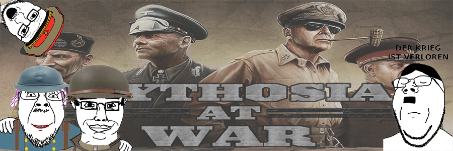
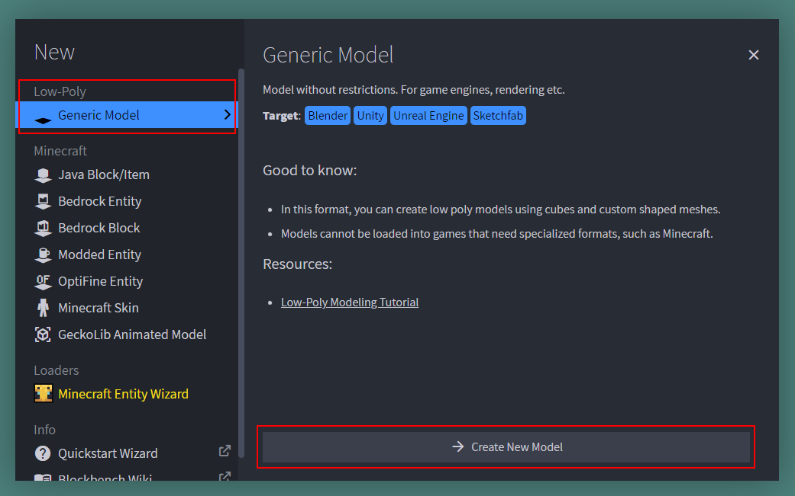
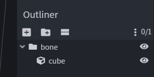
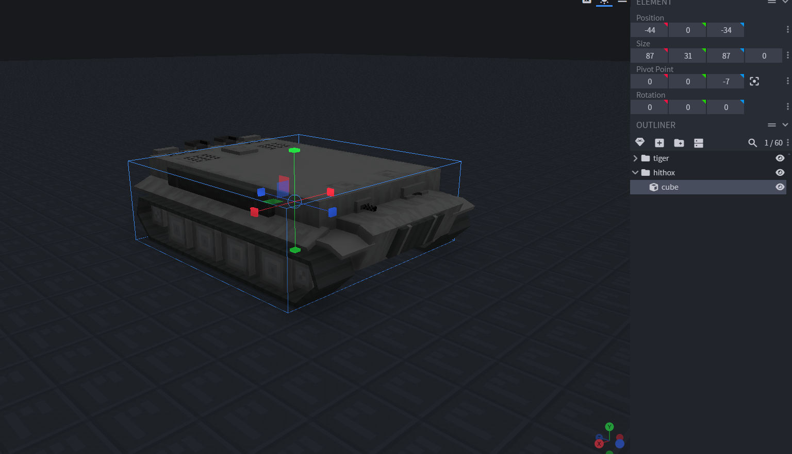
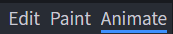
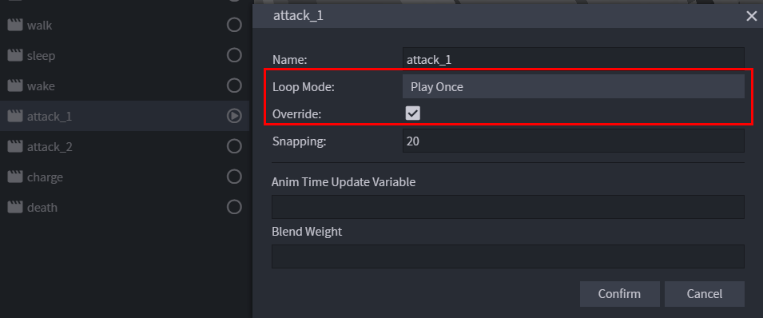
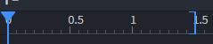
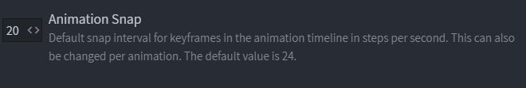

[!info] Info
This project is being developed by a dumb dev, ask him if you can't find an info in wiki.

Getting started
We are using a custom plugin called zv (Zappo Vehicles) and xc (xeth combat) for the vehicle system. Models and animations are handled by Model Engine 4. Vehicle and XC plugin is currently maintained by Zappo.
This project is still in beta and some stuff might change
[!info] Questions?
If you have any questions, ask zappo on discord.gg/mythosia
We are using pretty much same modeling system with Model Engine 4, so check out their wiki too! Modeling · Wiki · MythicCraft / Model Engine 4
Creating a Model
We are using Block Bench Generic Models.

Important Concepts
When modeling, it is important to know the differences between Bones and Cubes.
Cubes are each individual cube in a model. Bones are folders for cubes, grouping them up. Model Engine achieves smooth animation by taking a Generic or Bedrock model and splitting it into multiple resource pack compatible models, based on the bones. In-game every bone is represented by an armor stand that wears the new models on its head.
Because the new models are put into a resource pack, Cubes must obey the laws and restrictions of Minecraft Item Modeling:
- Rotations can only be 0, 22.5, -22.5, 45, and -45. Rotations like 90 and 67.5 do not count.
- Only one axis can have a rotation
However, Bone has less restriction:
- Can rotate with no limits
You can build the entire model with only bones, but since each bone with a model uses an entity, it is wise to keep a balance between Bone and Cube.
In Blockbench, you can create a Bone by adding a folder/group to the outliner. Then, you can start adding cubes into the bone.

Bone Behaviors
Bones have different behaviours, Bone Behaviors · Wiki · MythicCraft / Model Engine 4 you can get more information about them in Model Engine wiki.
Supported Model Engine Bone Behaviors are:
- Inherited Head (hi_)
- WIP
Hitboxes
The Hitbox works exactly like how vanilla hitboxes do. You can hit it, shoot arrows at it, and the model will get stuck if trying to pass through a gap too small for it. Keep in mind that hitboxes are Axis-Aligned. You can't add multiple hitboxes to a single model but you can add hitboxes for each component of the vehicle (for example: turrets can have different hitboxes than the actual model)
Eye Height, on the other hand, tells Model Engine how tall is the model. When a mob is short, it tends to look up at you. When it is tall, it looks down on you. Eye Height allows you to set the exact height of your model so the model looks at you correctly. It is also the "breathing" position, where the mob will suffocate if it is in a solid block.
Create both by adding a bone called hitbox with a cube inside. The size of that cube is the hitbox size, and the eye height is the Y value of the hitbox bone's pivot point.
Due to Minecraft's limitations, the X and Z values of the hitbox must be the same. Therefore, Model Engine only reads the largest width of the cube, and ignores the Z size. The hitbox must also obey Minecraft's hitbox limit, which is 64x64x64 in blocks (1024x1024x1024 in pixels).

Important Concepts
Vehicles uses Blockbench Generic Model Animate feature, seperating parts into appropriate bones with appropriate pivot points is important for animating models.

State
Let's start with the basics. With Model Engine, models move according to the states they have. Each model can have multiple states at once. For example, a model can be walking and attacking at the same time. You are not required to create a unique animation for such situations. Model Engine will automatically combine the animations you assigned to both states, and create a new animation.
Loop and Override are two very basic yet important options you can select for your animation. It controls how a state should be interpreted and executed.
Loop Mode
Loop Mode determines whether an animation should run only once, indefinitely, or hold on last frame until it is removed.
When a state is set to only play once, the state would be automatically removed from the model after playing.
If it is set to loop, the state will loop back to the first frame, and only stop playing when the state is removed manually.
Finally, as the name would suggest, hold on last frame will stay on the last animation frame instead of looping back.
Override
Override flag tells Model Engine that this animation should cancel all animations that have lower priority than it. This option is mainly used when the model has multiple states, but you don't want other animations interrupting it. For instance, a special attack animation shouldn't combine with idle or walk.
You can toggle these options in BlockBench by right-clicking on one of the animations and checking the checkboxes.
Supported States
+------------+------------------+-----------------+--------+---------+ |State (name)|Condition |Loop Mode |Override|Suggested| | | | | | | | | | | |Duration | +------------+------------------+-----------------+--------+---------+ |move |Moving |Play Once |No |1 or 2 | +------------+------------------+-----------------+--------+---------+ |shoot |Shoot |Play Once |Yes |1 or 2 | +------------+------------------+-----------------+--------+---------+ |land |Plane landed state|Hold on last tick|No |0 | +------------+------------------+-----------------+--------+---------+ |flying |Plane flying state|Hold on last tick|No |0 | +------------+------------------+-----------------+--------+---------+ |destroyed |Destroyed vehicle |Hold on last tick|Yes |0 | +------------+------------------+-----------------+--------+---------+


Keep in mind that blue ] above indicates when animation ends.
FPS

Vehicles supports animation speed of 20, you can change it in Files>Preferences>Settings>Defaults
Hitboxes
The Hitbox works exactly like how vanilla hitboxes do. You can hit it, shoot arrows at it, and the model will get stuck if trying to pass through a gap too small for it. Keep in mind that hitboxes are Axis-Aligned. You can't add multiple hitboxes to a single model but you can add hitboxes for each component of the vehicle (for example: turrets can have different hitboxes than the actual model)
Eye Height, on the other hand, tells Model Engine how tall is the model. When a mob is short, it tends to look up at you. When it is tall, it looks down on you. Eye Height allows you to set the exact height of your model so the model looks at you correctly. It is also the "breathing" position, where the mob will suffocate if it is in a solid block.
Create both by adding a bone called hitbox with a cube inside. The size of that cube is the hitbox size, and the eye height is the Y value of the hitbox bone's pivot point.
Due to Minecraft's limitations, the X and Z values of the hitbox must be the same. Therefore, Model Engine only reads the largest width of the cube, and ignores the Z size. The hitbox must also obey Minecraft's hitbox limit, which is 64x64x64 in blocks (1024x1024x1024 in pixels).
Soon...